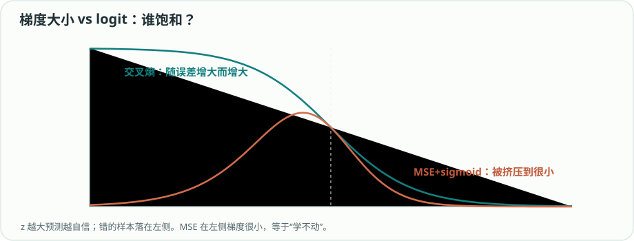
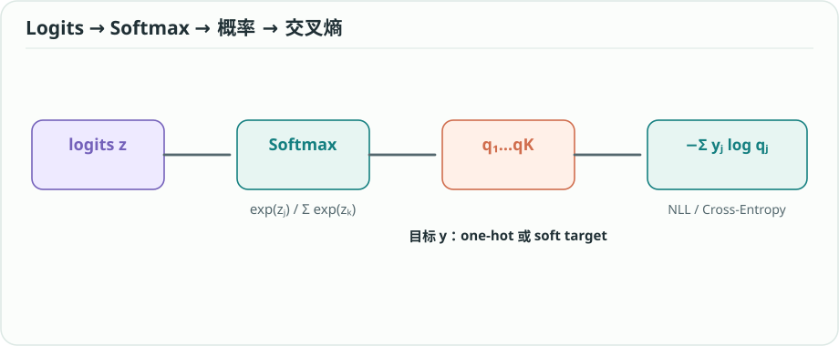
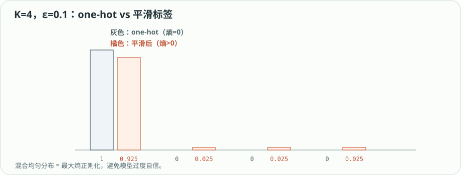
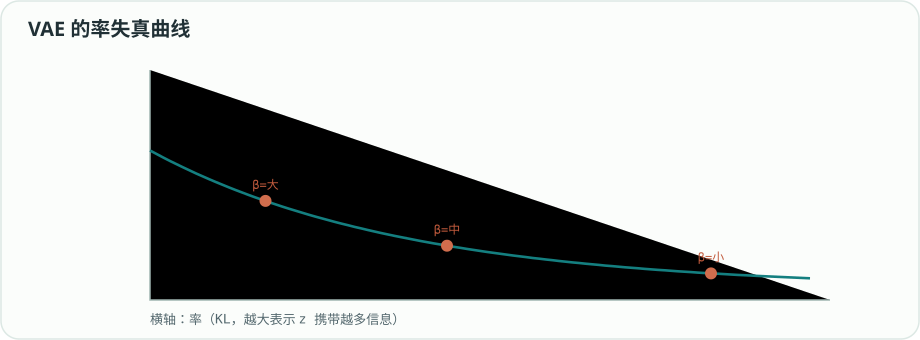

为什么分类问题该用交叉熵而不是 MSE？
教训很常见：用 MSE 训练一个 softmax 分类器，损失几乎不下降；换成交叉熵立刻开始收敛。这不是调参玄学，而是由概率模型决定的：交叉熵对应最大似然估计，MSE 对应高斯噪声假设——而分类标签不是高斯分布的连续值。这一章把两个损失函数放在同一套信息论语言下比较。
交叉熵就是分类问题的负对数似然
给定输入 x、模型输出各类别概率 p(y|x;θ)，训练集 {(xᵢ,yᵢ)} 的最大似然估计是最大化似然乘积，取负对数后变成最小化负对数似然：
交叉熵 H(P,Q)=−Σ P(x)log Q(x)。把真实标签看作 one-hot 分布 Ptrue、模型预测看作 Q=Pmodel，则 H(Ptrue,Pmodel)=−log Pmodel(正确类)。这正好是负对数似然。因此最小化交叉熵 = 最大化似然，两者数学上完全等价。
Softmax + 交叉熵：梯度就是 p−y
softmax 把 logits 向量 z 变成概率分布：pi=ezᵢ/Σjezⱼ。配合交叉熵损失 L=−Σjyjlog pj，对 logits 求导会得到极简的形式：
梯度就是“预测概率减真实概率”。预测对了就接近零、不再更新；预测越错，梯度越大。这一点非常重要：它意味着交叉熵的梯度不会因为输出接近 0 或 1 而饱和。
对比 MSE + sigmoid：MSE 对 logits 的梯度里带着 sigmoid 导数 σ(z)(1−σ(z))，当 σ(z) 接近 0 或 1 时它趋近于 0，于是“错得很离谱”时梯度反而几乎为零，模型卡住。这是分类任务不用 MSE 的关键原因。


二分类退化为 sigmoid；p=sigmoid(z)，NLL=−ln p，梯度 ∂L/∂z=p−y（y 为正确类标签）。
Label smoothing 的最大熵视角
one-hot 目标的熵为 0，它鼓励模型给出极端置信度，容易过拟合、校准差。label smoothing 把目标改成
从信息论看，这就是把 one-hot 与均匀分布（所有离散分布中熵最大者）混合，把目标熵从 0 抬高到一个正数。所以它近似一种“最大熵正则化”：告诉模型不要对训练标签过度确信。代价是教师模型的 soft label 变软，知识蒸馏时可用信息变少。

VAE 的 KL 项就是率失真权衡
变分自编码器的损失由重构项与 KL 项组成：
KL 项约束“从 x 传到 z 的信息量”：它为 0 时 q(z|x)=p(z)，模型根本没用 x；太大则没有压缩。这正是第 19 章的率失真权衡：隐变量 z 是编码，重构误差是失真，KL 是率。β-VAE 给 KL 项加上权重 β 调节这个权衡，β 适当大时能学到更解耦的表示。

把梯度与损失写成可测试代码
本仓库的 Python 样例实现 softmax、交叉熵及其对 logits 的梯度，并用固定点断言。
from examples.foundations import (
softmax, cross_entropy, cross_entropy_grad)
z, y = [2.0, 1.0, 0.0], [1.0, 0.0, 0.0]
p = softmax(z)
assert abs(p[0] - 0.6652409) < 1e-6
assert abs(cross_entropy(y, p) - 0.5880511) < 1e-6
g = cross_entropy_grad(z, y)
assert all(abs(a-b) < 1e-9 for a, b in zip(g, [p[0]-1, p[1], p[2]]))这不依赖任何深度学习框架：交叉熵、softmax 与梯度都只是有限维向量的初等运算，方便与框架内实现逐项对账。
来源与延伸阅读
- C. Szegedy et al. (2016), Rethinking the Inception Architecture for Computer Vision, CVPR：label smoothing 的引入。
- D. P. Kingma & M. Welling (2014), Auto-Encoding Variational Bayes, ICLR：VAE 与 ELBO/ KL 正则。
- I. Higgins et al. (2017), beta-VAE: Learning Basic Visual Concepts with a Constrained Variational Framework, ICLR：率失真权衡的权重化。
- Cover & Thomas, Elements of Information Theory：交叉熵与相对熵的定义。